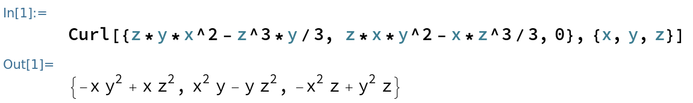

| Интеграл | Определение | Как вычислять | Свойства | + |
|---|---|---|---|---|
| Криволинейный интеграл 1 | $\int_\alpha^\beta f(x(t),y(y),z(t)) ||\overline r' (t)|| dt = \int_\Gamma f dl$ | Параметризовать кривую и тупо вычислить |
|
$\int$ — масса кривой, если $f$ — её плотность |
| Криволинейный интеграл 2 | $\int_\alpha^\beta \overline F \cdot \overline r'(t) dt = \int_\alpha^\beta (P(x,y,z)x'(t) + Q(x,y,z)y'(t) + R(x,y,z)z'(t))$ Обозначение: $\int_\Gamma \overline F d \overline r = \int_\Gamma Pdx + Qdy + Rdz$ |
Либо так же, как первого рода(параметризовать кривую) Либо TODO |
Всё то же самое, но зависит от направления кривой | $F$ — векторное поле, тогда $\int$ его работа вдоль кривой |
| Поверхностный интеграл 1 | $\int \int_\Omega f(x,y,z) |\overline r_u \times \overline r_v| dudv = \int \int_\Sigma f(x,y,z) ds$ | Либо параметризовать поверхность и вычислить через двойной Либо, через формулу Стокса |
|
Как бы масса поверхности, если $f$ — функция плотности |
| Поверхностный интеграл 2 | $\int \int_\Sigma \overline F \cdot \overline n_0 d s = \int \int_\Sigma Pdydz + Qdzdx + R dxdy$ | $$ \int \int_\Sigma Pdydz + Qdzdx + Rdxdy = \\
\pm \int \int_{\Sigma_{yz}} P(x(y,z),y,z)dydz \\
\pm \int \int_{\Sigma_{zx}} P(x,y(x,z),z)dzdx \\
\pm \int \int_{\Sigma_{xy}} P(x,y,z(x,y))dxdy$$
что касается знаков, берём "+", если угол между нормалью и осью, не фигурирующей в дифференциале острый, ичаче "-" Либо через формулу Гаусса-Остроградского |
Поток векторного поля через двусторонюю поверхность |
TODO
TODO
$\nabla = \left( \dfrac \partial {\partial x}, \dfrac \partial {\partial y}, \dfrac \partial {\partial z} \right) $
$grad f = \nabla f$
$div \overline a = \nabla \cdot \overline a$
$rot \overline a = \nabla \times \overline a$
| Свойства $\nabla$: |
|---|
| $\nabla (c_1f + c_2g) = c_1 \nabla f + c_2 \nabla g$ |
| $\nabla (f g) = f \nabla g + g \nabla f$ |
| $ \nabla \cdot (\f \times \g) = (\nabla, \f, \g) = \\ \begin{pmatrix} \frac \partial {\partial x} && \frac \partial {\partial y} && \frac \partial {\partial z} \\ f_x && f_y && f_z \\ g_x && g_y && g_z \end{pmatrix}= \\ \begin{pmatrix} g_x && g_y && g_z \\ \frac \partial {\partial x} && \frac \partial {\partial y} && \frac \partial {\partial z} \\ f_x && f_y && f_z \end{pmatrix} - \begin{pmatrix} f_x && f_y && f_z \\ \frac \partial {\partial x} && \frac \partial {\partial y} && \frac \partial {\partial z} \\ g_x && g_y && g_z \end{pmatrix}= \\ = \g(\nabla \times \f) - \f(\nabla \times \g) $ |
Из СР по матану: $\nabla \times (c \times a) = c \cdot (\nabla \cdot a) - (c \cdot \nabla) \cdot a$
Подумаем, шо ж такое слева написано.
$\dfrac{\partial}{\partial x} \left(\sum\right) + \dfrac{\partial}{\partial y} \left(\sum\right) + \dfrac{\partial}{\partial z} \left(\sum\right)$.
Сейчас не важно, что это за суммы. Важно лишь то, что они имеют вид $\sum_i \dfrac \partial {\partial ?} c_i a_i$.
Это значит, что под оператором дифференцирования есть одна константа и одна функция!
Значит, с дифференцировением можно делать всё, что угодно, но только не переставлять правее, чем $a_i$.
Забудем, что это оператор дифференцирования и применим формулу
"BAC-CAB".
Понятно, что в доказательстве (доступно по последней ссылке) никто не переставлял дифференцирование с $a_i$
[ну представим в доказательстве, что $\alpha_i$ — операторы дифференцирования], значит, мы можем применить эту формулу.
Теперь и формула (12) со страницы 14 отсюда , теряет свой мистический облик. Рассмотрим $\nabla \times (f \times g)$. Формула имеет почти тот же вид, но под оператором дифференцирования теперь произведение функций. Но мы знаем, что для каждого слагаемого выполнены правила дифференцирования, то есть $(ab)' = ab' \text{ [считаем a константой] } + ba' \text{ [считаем b константой] }$. Значит, и для всей суммы они выполнены. Применим это сюда: $\nabla \times (f \times g) = \nabla \times (\hat f \times g) + \nabla \times (f \times \hat g)$ $\text{ /"треугольной шапочкой" обозначено то, что мы интерпретируем функцию как константу/ } = $ ${\color{red}\nabla \times (\hat f \times g)} - {\color{green}\nabla \times (\hat g \times f)} = \text{ /по предыдущей формуле/ } = $ ${\color{red}f \cdot (\nabla \cdot g) - (f \cdot \nabla) \cdot g} {\color{green} - (g \cdot (\nabla \cdot f) - (g \cdot \nabla) \cdot f)} =$ ${\color{red}f \cdot (\nabla \cdot g) - (f \cdot \nabla) \cdot g} {\color{green} - g \cdot (\nabla \cdot f) + (g \cdot \nabla) \cdot f}$
Пусть, $\Omega$ — область, имеющая кусочно-гладкую границу $\partial \Omega$, $\overline n_0$ — внешняя нормаль, отнормированная к 1, поле $\overline a (M)$ непрерывно дифференцируемо на $\Omega$. Тогда:
$\int\int_{\partial \Omega} \overline a \cdot \overline n_0 ds = \int \int \int_\Omega div (\overline a) dx dy dz$
TODO
TODO
Как искать?
$A = (P,Q,R)$
$H = (H_x,H_y,H_z)$
$H_x = \int Qdz + \psi(x,y)$
$H_y = - \int Pdz + \phi(x,y)$
$H_z = 0$
$(H_y)'_x - (H_x)'_y = R$
Пример:
$P=x(z^2-y^2) \\ Q=y(x^2-z^2) \\ R=z(y^2-x^2)$
По формулам:
$H_x = \int y(x^2 - z^2) dz + \psi(x,y) = zyx^2 - \dfrac{z^3y}3 + \psi(x,y)$
$H_y = - \int x(z^2 - y^2) dz + \phi(x,y) = - (\dfrac{z^3x}3 - zxy^2) + \phi(x,y)$
Берём производные:
$(H_y)'_x = -\dfrac{z^3}3 + zy^2 + \phi'_x(x,y)$
$(H_x)'_y = zx^2 - \dfrac{z^3}3 + \psi'_y(x,y)$
Пытаемся найти $\psi$ и $\phi$:
$R = z(y^2-x^2) = (H_y)'_x + \phi'_x(x,y) - (H_x)'_y - \psi'_y(x,y) = zy^2-zx^2 + \phi'_x(x,y) - \psi'_y(x,y)$
Нам очень повезло: $\psi = 0, \phi = 0$ подходит. Тогда, $H=(zyx^2-\dfrac{z^3y}3,zxy^2-\dfrac{xz^3}3,0)$
Проверим: найдем $rot H$

вроде совпал.